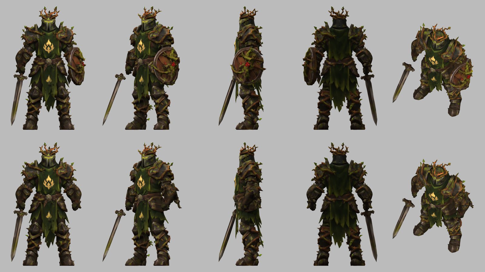

Briar Knight from Tripo, rigged
Your export of the Hollow Wood champion, with both shields taken off, a two-legged skeleton and 11 moves added by hand. His timings are the game's. Pick a move, drag to turn him, and judge the weight and the hit. Nothing in the game has changed.
Tripo model
idleIdle or Walk sets what he does between attacks, and Going turns him on the spot. An Action plays over it and repeats until you press it again. Hurt plays on top of anything. Death leaves him on one knee: press it again and he spawns back in. The bar names the part of the move that is playing, in the game's own words. Enraged is his state under half health: it stays on over every move until you switch it off, and he walks faster. The thicket from a Thorn Ring stays on the floor for 5 s.
Model as you sent it
four views
He came with a second shield fused onto his sword arm. I cut it off and rebuilt the outside of that forearm from the armour around it. In Version 3 the round shield on his left arm is gone too, as you asked (below). The crown of briars, the tabard, the vines and the sword came through whole.
- Triangles
- 11,301 champion budget 12,000 · not trimmed
- Bones
- 21 hips, spine, chest, head, 2 in the left arm, 3 in the sword arm, the sword, 4 in the tabard, 3 in each leg
- Texture
- 1 × 2K colour only, with a strip added for the rebuilt forearm
- File
- 1.9 MB one GLB with all the moves at 60 frames a second
- Size on this page
- 2.4 u tall my guess from the game rig (crown at 2.75 u), beside a 1 u hero. Say if he should be bigger.
Changed in Version 3
- No shield. The round shield was fused into the outer half of his left forearm, so cutting it off left that arm half gone. His left arm below the shoulder plate is now a mirror of his sword arm, with the fist closed where the sword grip ran through it. Both arms now match.
- The left arm in every move is an empty fist: low and a little forward in his stance, swinging at his side in the walk, across his chest in the charge, thrown wide in the roar and the heavy hit, laid on the raised knee in the kneel.
- Spawn had him strike the sword on the shield. Now he salutes, the hilt before his visor and the left fist on his heart, then cuts the blade down and out so its point finds the hero.

Changed in Version 2
- Death ends like your picture: on one knee, the sword planted in front of him, the helm bowed. He no longer falls on his face.
- Walk has the feeling of your picture: a slow, sure advance with the helm low, the arms hanging and the sword low at his side.
- No 外八. The model stands with its legs spread and its boots turned out. The walk now puts the feet close to one line, 0.42 u apart, and turns each boot in so the knees and toes point straight ahead. The turns on the spot are narrower too.
- A fault of mine in Version 1, fixed in every move: the sword arm was twisted half a turn along its length whenever it reached for a point, which crushed the right shoulder plate. It now turns the way the arm was modelled.
The moves, and where their timing comes from
| Move | What he does | Timing |
|---|---|---|
| Idle | A vigil. Slow breath in the chest and shoulders, his weight eases from one foot to the other, the helm sweeps left and then right, he rolls the sword's point once and flexes the left fist. | 6 s loop |
| Walk new | From your picture: he comes on slowly and does not hurry. The body is upright and nearly still, the helm is low and stays on the hero, both arms hang, the left fist at his side and the sword low with its point out to his right, just off the floor. The feet fall close to one line with the knees and toes straight ahead (no 外八). | Game: 1.25 u/s. 1.0 s for two steps. Enraged: 1.44 u/s, the same steps played faster. |
| Turn left, turn right | Steps round on the spot, helm leading. | 112° a second (my number: the game turns him instantly) |
| Bramble Charge | The right foot goes back, the left forearm comes across his chest and the sword comes level beside it like a couched lance. He sinks, cocks back and shakes. He is thrown forward off the back foot into a low sprint, left shoulder first, digs the lead foot in ahead of him to stop, rocks back once and squares up. | Game: couch for the 1 s lane warning, drive 2.5 frames landing on the warning's end, 9 u/s down a lane 1.1 u wide and up to 6.5 u long, stop held 3 frames and a beat, settle 0.5 s. Here he runs the full 6.5 u; the hero stands 4.5 u off (he picks the farthest hero). |
| Thorn Ring | The left foot steps wide, the left arm swings out and the sword goes up high with its point down, trembling. He drives it into the floor in front of him with both knees deep. Thorns burst across the ring and a thicket stays. He draws the blade out and stands. | Game: raise for the 1.2 s ring warning (r 2.8 u round him), plant 2.5 frames landing on the warning's end, held 3 frames, recoil 0.2 s, settle 0.5 s. Thicket r 2.2 u for 5 s. |
| Rage | He folds in over his left forearm, then stamps the right foot and throws both arms wide with the helm back, shaking. The Enraged state stays on after it: hunched, quick breath, the visor burning. | Mine: 1.6 s. The game does not stop him: below half health the visor burns, he walks 15 percent faster and his moves come back 30 percent sooner. |
| Hurt | The helm and chest flinch away and the arms jolt. Plays on top of any move, so planted feet stay planted. | 0.42 s |
| Heavy hit | Driven back two short steps with the left arm knocked wide, he catches himself low, shakes his helm and squares up. | 1.15 s |
| Spawn | Grows from the floor in a crouch, stands to his full height and salutes: the hilt before his visor, the blade upright, the left fist on his heart. Then he cuts the blade down and out so its point finds the hero. new | Game: grow in 7 frames, then a 1.6 s entrance. The rise and the salute are mine. |
| Death new | From your picture: he does not fall. A jolt, the sword's point drops to the floor ahead of him and he leans on it, the left foot steps forward, the right knee gives and comes down. He ends on one knee with the sword upright under his right hand, his left forearm on the raised knee and the helm bowed. The visor goes dark. | 2.3 s, then he stays kneeling |
Measured before sending
| What was measured, on every frame of every move | Result |
|---|---|
| A planted foot moving on the floor (locked feet) | 0 mm in every move, the sprint included |
| A planted foot its leg could not reach | 0 mm |
| Loops that jump when they restart (idle, walk, both turns, the enraged state) | 0 |
| Lowest point of the body under the floor | Nothing but the sword's point, on purpose: 0.1 u into the floor when he plants it in the Thorn Ring, and 0.04 u where it stands planted in the death. |
| The sword in his fist | As sent, the guard only touched the front corner of the fist. It is seated 0.03 deeper so no gap opens when the hand turns. |
| The tabard, front and back | Two joints each, run as springs: they trail the body, ring after it stops and rest on the floor instead of passing through it. |
These numbers come from the model file. I checked the poses as still frames only: the cloud machine cannot play the page at full speed, so the weight, the timing and the hit are yours to judge.
Open choices
- Sword or lance. The game's Briar Knight carries a lance and a seven-sided buckler. Tripo gave him a short sword held point down and a round shield, which is now gone. The charge couches the sword like the lance. Say if you want a lance made for him instead.
- Visor colour. His visor is yellow-green in the texture and flares in that colour here. The game's tell is an indigo visor. Say if it should be recoloured.
- Rage. A new 1.6 s roar. The game has no pause at half health, only the burning visor. The Enraged button shows the state without the roar.
- The stop. Built on locked feet, as the game's rule: he digs one foot in and rocks back. A true skid with dust would break that rule but could feel heavier.
- The sword's point in the walk. It is carried just off the floor. Dragging it along the floor with a scratch line and sparks would be a new effect: say if you want it.
- Size. Drawn 2.4 u tall.
What is rough
- Both forearms are now the same rebuilt arm, so seen from either side the outer forearm is smoother and plainer than the rest of the armour. A regenerate from front and back views only would give it real detail.
- The new left arm is its own piece tucked up inside the left shoulder plate, not joined to it. I saw no gap in the stills, but a gap could open under the plate when the arm swings wide.
- His arms are short and thick, so the sword hand cannot reach across his body, and the left fist sits on the left of his chest in the salute.
- His sword is short, so the hand on the planted sword sits at chest height, not beside the helm as in your picture.
- The vines and thorns bend with the armour like skin.
- Switching from Walk into an attack blends in 0.03 s, so a foot can jump a little at that instant.
- No ink outline and no flat game colours yet, the same as the hero models.
- The effects are stand-ins drawn for this page in the game's colours: Ember for the floor warnings, Violet for his power, dark briar for the thorns. They are kept dim on purpose.